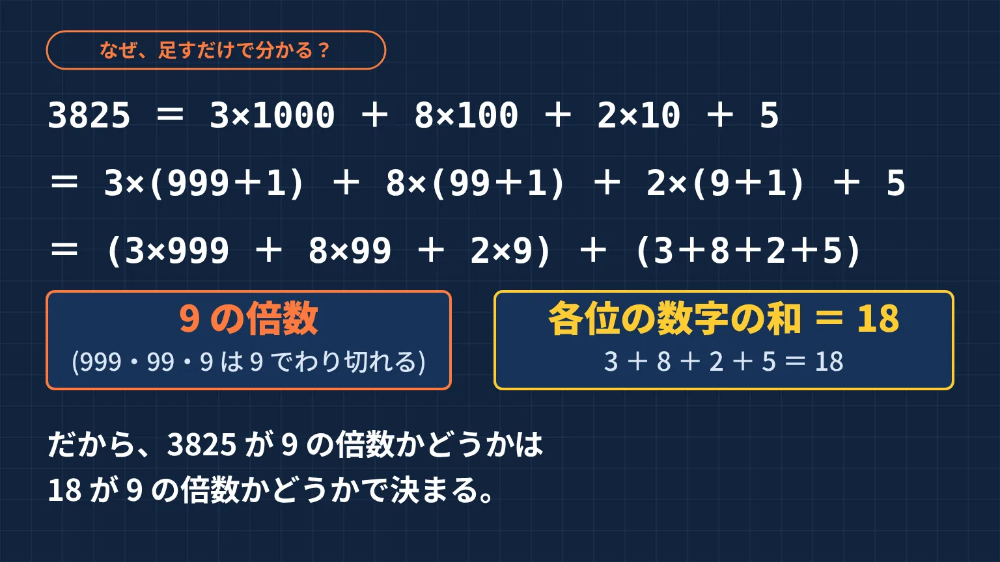

まずは試してみよう
3825 は、9 の倍数だろうか。割り算をしなくても、各位の数字をたすだけで分かる。
3 ＋ 8 ＋ 2 ＋ 5 ＝ 18。この 18 が 9 の倍数（9 × 2）なので、3825 も 9 の倍数だ。確かめると、3825 ÷ 9 ＝ 425 で、ちゃんとわり切れる。
| 3825 → 3＋8＋2＋5 ＝ | 18 → 9の倍数 |
| 7416 → 7＋4＋1＋6 ＝ | 18 → 9の倍数 |
| 1234 → 1＋2＋3＋4 ＝ | 10 → 9の倍数ではない |
実際に、7416 ÷ 9 ＝ 824 でわり切れ、1234 ÷ 9 は 137 あまり 1 になる。つまり、次のことがいえる。
各位の数字の和が 9 の倍数なら、その数は 9 の倍数である。
好きな4桁の数を作り、各位の数字をたして、9 の倍数かどうかを予想しよう。そのあと、電卓で ÷ 9 をして確かめてみよう。
和が2桁になったら、もう一度たしてよい（18 → 1＋8 ＝ 9）。
どうして、たすだけで分かるのか
ヒントは、10、100、1000 が、「9 の倍数 ＋ 1」になっていることだ。
| 10 ＝ | 9 ＋ 1 |
| 100 ＝ | 99 ＋ 1 |
| 1000 ＝ | 999 ＋ 1 |
9、99、999 は、どれも 9 でわり切れる（9 × 1、9 × 11、9 × 111）。これを使って 3825 を分けてみよう。

9 の倍数の部分は、9 でわり切れる。だから、3825 が 9 でわり切れるかどうかは、残りの 18 が 9 でわり切れるかどうかで決まる。
余りも分かる、検算にも使える
実は、各位の数字の和を 9 でわった余りは、もとの数を 9 でわった余りと同じになる。例えば 1234567 は、1＋2＋3＋4＋5＋6＋7 ＝ 28 で、28 ÷ 9 の余りは 1。実際に、1234567 ÷ 9 の余りも 1 だ。
この性質は、かけ算の検算に使える（「九去法」という）。347 × 28 ＝ 9716 を確かめてみよう。各位の数字をたして、1桁になるまで繰り返す。
| 347 → 3＋4＋7 ＝ 14 → 1＋4 ＝ | 5 |
| 28 → 2＋8 ＝ 10 → 1＋0 ＝ | 1 |
| 5 × 1 ＝ | 5 |
| 9716 → 9＋7＋1＋6 ＝ 23 → 2＋3 ＝ | 5 |
最後の数が一致した。もし一致しなければ、計算のどこかが間違っている。ただし、一致しても必ず正しいとは限らないので、「間違いを見つける道具」として使おう。
おまけ：ひっくり返して引くと
2桁の数と、数字を逆にした数の差も、9 の倍数になる。52 － 25 ＝ 27 ＝ 9 × 3 だ。理由は、文字で書くとすぐ分かる。
3桁でも、同じことが起こる。
| 726 － 627 ＝ | 99 |
| 853 － 358 ＝ | 495 |
| 941 － 149 ＝ | 792 |
どれも 9 の倍数だ。しかも、答えの各位の数字の和が、全部 18 になっている。3桁の数 100a ＋ 10b ＋ c から逆の数を引くと、いつも 99(a － c) になるからだ。99 × 1 から 99 × 9 までの各位の数字の和は、すべて 18 になる。第2回で出会った 495 も、9 のなかま（495 ＝ 9 × 55）だった。
百の位と一の位がちがう好きな3桁の数を決めて、逆にした数との差を計算しよう。答えの各位の数字をたすと、いくつになるだろう。